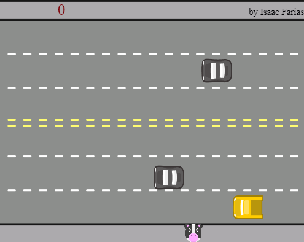
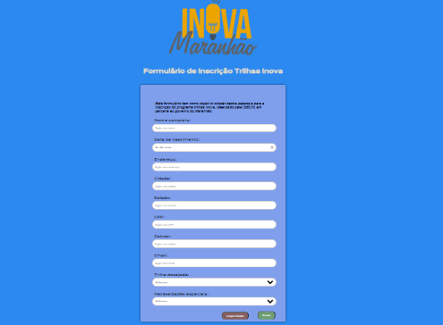

Projetos Realizados
Game Collider
O projeto Collider foi um projeto orientado pela plataforma Alura, plataforma de ensino para área de programação e tecnlogia em geral, o projeto teve cmo objetivo trabalhar ferramentas da linguagem de programação Java Script, O Collider é um game codificado por mim, com auxilio dos orientadores Alura, Nele você deve mover o jogador que neste caso é um emote uma Vaca, deve se atravessar a rua e somar a maior quantidade de pontos nessas atravessias sem ser tocado pelos carros em alta velocidade, Clicando no botão abaixo, você será direcionado ao jogo, aproveite!!
Game ColliderFormulário Inova Maranhão
A página de formulario acima está relacionado ao programa inova Maranhão. fez parte do terceiro desafio proposto pela equipe de monitoria do Trilhas, a ideia é codificar a página e trabalhar com html e css, cada aluno ficou responsável pela sua própria página, ficando a critério a escolha da paleta de cores e tamanho dos elementos, o desafio deve ser avaliado para captação do conhecimento dos alunos.